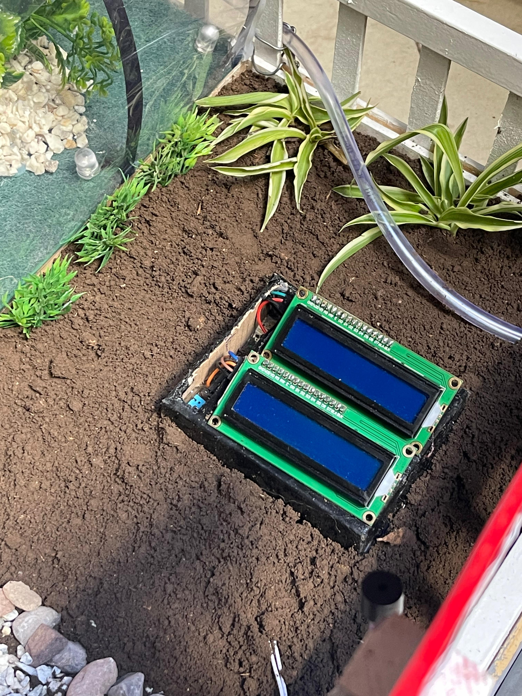

DHOM : Pour une Agriculture Intelligente
Bienvenue sur la page de présentation de notre projet IoT !

🔧 Technologie
Le projet utilise la plateforme ESP32, un microcontrôleur puissant et polyvalent, idéal pour des applications IoT. Il est équipé de Wi-Fi et Bluetooth intégrés, permettant une connectivité en temps réel avec divers capteurs.
Les capteurs utilisés incluent :
- DHT11 : Capteur de température et d'humidité, fournissant des données précises sur les conditions climatiques.
- HX710B : Utilisé pour la mesure de pression, essentiel pour surveiller le sol et les niveaux d'eau.
- Capteur d'humidité de sol : Permet de déterminer le niveau d'humidité du sol, optimisant ainsi l'irrigation.
- Capteur de niveau d'eau : Surveille le niveau d'eau dans les réservoirs, garantissant un approvisionnement adéquat pour l'irrigation.
- Capteur de gaz : Détecte les fuites de gaz pour assurer la sécurité des installations.
- Capteur de flamme : Alerte en cas de détection de flammes, contribuant à la sécurité incendie dans les espaces agricoles.
En outre, le projet intègre des afficheurs LCD pour visualiser les données en temps réel, ainsi que l'application Blynk pour une gestion à distance. Les données sont également envoyées à HiveMQ, un broker MQTT, facilitant la communication entre les différents composants du système. En se basant sur les données collectées par les capteurs, nous effectuons également des prédictions concernant les informations météorologiques, comme la température, l'humidité et la pression.
📊 Fonctionnalités
Le système offre une variété de fonctionnalités essentielles, notamment :
- Mesure précise de la température et de l'humidité.
- Surveillance en temps réel des conditions environnementales.
- Alertes instantanées en cas de détection de gaz ou de flammes.
- Affichage des données sur des dispositifs LCD pour un accès facile.
- Gestion à distance via l'application Blynk.
📍 Déploiement
Le système est conçu pour être utilisé dans un environnement agricole, optimisant ainsi :
- La gestion de l'irrigation pour une utilisation efficace de l'eau.
- La sécurité des installations grâce à des alertes en temps réel.
- Une agriculture durable en surveillant les conditions climatiques.
Systèmes du Projet
Système 1 : Gestion de l'Irrigation et Sécurité
Ce système intègre l'ESP32 avec des capteurs DHT11 et HX710B, permettant de mesurer la température, l'humidité et la pression. Les données sont affichées en temps réel sur un écran LCD, fournissant une visualisation claire des conditions actuelles. De plus, un capteur magnétique assure la sécurité de la porte, envoyant des alertes instantanées en cas d'accès non autorisé.
Système 2 : Serre Agricole

Ce système est conçu pour optimiser les conditions de croissance des plantes dans une serre. Il contrôle l'éclairage à l'aide de capteurs de lumière, ajustant l'intensité en fonction des besoins des plantes. En outre, un capteur ultrason détecte les obstacles, garantissant un environnement sûr pour les opérations automatiques.
Système 3 : Système de Détection d'Incendie

Ce système de sécurité incendie utilise un capteur de flamme et un capteur de pluie pour détecter rapidement les incendies. En cas de détection de flammes, il envoie des alertes instantanées et actionne des servo-moteurs pour activer des dispositifs d'extinction. Cela permet de réagir rapidement aux situations d'urgence, protégeant ainsi les installations agricoles.
Système 4 : Maison Smart

Ce système intègre des technologies de maison intelligente, avec un capteur de gaz pour détecter les fuites, garantissant la sécurité des occupants. Un servo-moteur permet de contrôler l'accès à la maison, tandis qu'un système RFID offre un moyen pratique et sécurisé d'entrer. Le tout est alimenté par un panneau solaire, assurant une solution durable et respectueuse de l'environnement.